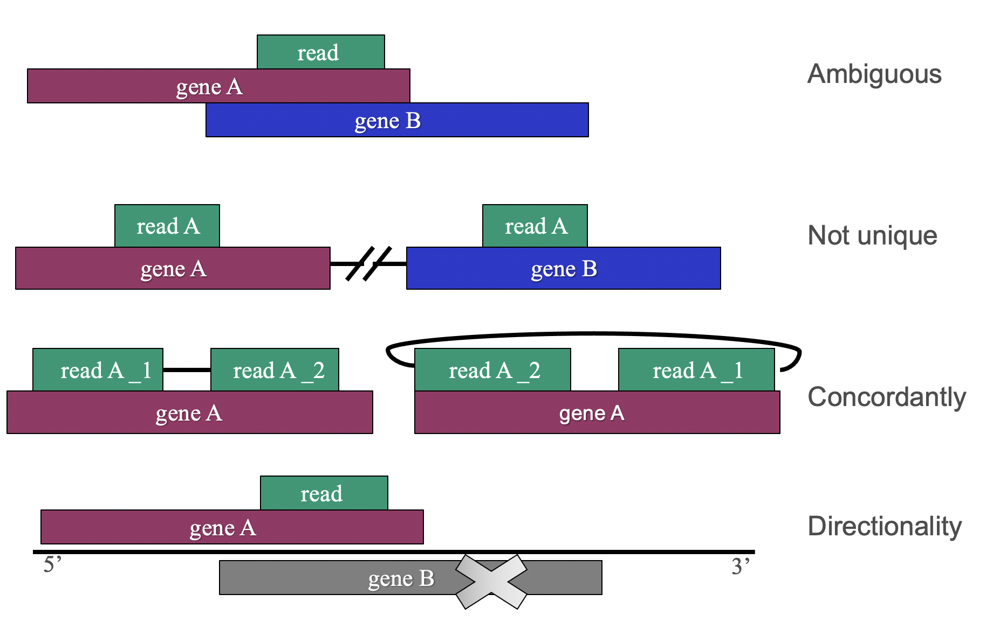

Aligning is a crucial step in many kinds of sequence/sequencing analyses. Aligning reads or any pieces of sequence to a reference genome is not a trivial task, and many aligners have been developed over the years for different needs. Some aligners tend to be used a lot and thus even get a “gold standard” stamp, but the field is still developing quickly.
Which is the best
aligner? Read more here!
Spoiler: no single aligner is the best: it depends on goals, sequencing technology used, species,
computational constraints…
| Aligner | Splice aware (=for RNAseq) | Genomes available | Possibility to use own genome | Comments |
|---|---|---|---|---|
| STAR | x | Human, mouse, rat | - | Fast and accurate, needs a lot of memory |
| HISAT2 | x | Human, mouse, rat | x | Fast and accurate, creating the genomic index needs a LOT of memory, ”Tophat 2.0” |
| TopHat2 | x | See list here on the tool parameters. 32 genomes | x | Slower, needs less memory, less accurate than HISAT2, will be phased out soon |
| Bowtie2 | See list here on the tool parameters. 35 genomes | x | More accurate than Bowtie2 for very short reads | |
| Bowtie | See list here on the tool parameters. 35 genomes | x | Developed especially for long reads | |
| BWA-mem | See list here on the tool parameters. 35 genomes | x | ||
| BWA-backtrack | See list here on the tool parameters. 35 genomes | x | ||
| Minimap | See list here on the tool parameters. 35 genomes | - |
There are a couple of terms that one needs to understand when studying the aligners further.
Firstly, you need to know if your data was sequenced paired-end (PE) or single-end (SE), and whether it was produced with a directional protocol. The latter is dealt with a parameter in those tools that can take that into account, whereas paired-end and single-end tools are usually separate tools in Chipster, and the command syntax is different in the command line tools.
Aligning reads is not always straightforward: in an ideal case, your read aligns perfectly to exactly one location in the reference genome. In this case you would be absolutely sure that the read originated from this exact location. If you think this claim any further, you will realize that this can be said with absolute certainty in very rare cases: your read might have sequencing errors, it might not be that long (not that much evidence, same sequence could be present elsewhere in the reference), there might be some mutations/variants/indels/SNPs present, the reference might not be aware of all the splice sites and so on.
If you decide to take into account only those reads that map without mismatches to exactly one location in the reference genome, you are tossing away lots of reads because of the aforementioned reasons. So you most likely want to allow some mismatches and gaps in the alignments, and this is done with the aligner (default) parameters, but it does raise a question: how trustworthy and uniquely mapping the uniquely mapping reads (unireads) actually are? Aligners go around this issue using aligning scores, more of which later.
Ambiguous means that the read maps to location where there’s more than one gene. Nowadays many of the library preparation methods can preserve the information from which strand the read originally came from, which of course helps with the ambiguous situations. These methods are called directional or stranded.
The situation gets a bit more complex when dealing with paired-end reads, as also their orientation and distance between the read pairs (inner distance) affect how they are treated and reported, or only one of the pairs might be mapping (“singleton”). If reads are aligned “concordantly”, it means that they meet the expectations: usually this means that R1 is in forward direction and R2 in reverse, and the distance between the reads is in the range of 500bp.
“Discordant” reads don’t match this criteria, and it depends on the chosen aligner parameters how these reads are treated.
More information about directional protocols
Alignment quality score (or mapping quality, MapQ) can be expressed similarly as the base qualities, in Phred scores: Q = -10 * log10 (probability that mapping location is wrong). However, there’s really no sensible way to compute this likelihood, so mappers have their own systems for trying to give a numerical value for the confidence in read’s point of origin. The value is computed differently in different aligners, and depends on things like:
So the values differ in different aligners, and they are thus not comparable. For example, quality for unique mapping is:
These values can however be used in filtering the alignments, both inside the aligner and later on. Users must be careful with the default values and ready-made pipelines, because these values are not comparable between different aligners.
Different aligners allow users to tune the values affecting the alignment score, as well as what happens to reads with lower alignment scores: how are they reported and how are they outputted. For example, Bowtie2 reports only the "best" alignment (based on the score) by default, you can choose to output unaligned reads* to a fastq file and you can tune the penalties and bonuses for different things.
Below you can see couple of reports or “log files” from different aligners. From the number of input reads you can figure that they are from the same SE data. Different aligners report the alignment a bit differently, and also perform slightly differently.
The example cases above are from single-end reads. The situation gets a bit more complex when dealing with paired-end reads, as also their orientation and distance between the read pairs (inner distance) affect how they are treated and reported, or only one of the pairs might be mapping (“singleton”). (See the terminology section above.)
Here you can see example reports of paired-end data. These are now actually from a rather curious case, which you'll notice if you look at the unusually low alignment rate!
This table can be a bit tricky to read. First lines are seemingly clear: there were 200 000 reads (this is a toy dataset), all of which were paired (the input fastq files had the same amount of reads in them, which is the usual case). 68.62 % of these were uniquely and concordantly aligned -they are the obviously good ones.
What about the rest (31.38%)? Small percentage (4.25%) were “multimappers”, so they aligned to more than one location. Bigger portion, 27.13%, aligned concordantly 0 times, but out of them, some aligned discordantly 1 time (mid section in the report). These might represent some large insertions (making the inner distance between the read pairs longer than expected) or other larger difference in the sample compared to the reference genome.
Out of those reads that didn’t align concordantly or discordantly (54 257 – 8734 = 45 523), similar numbers are reported per each read mate: in the last section of the report, we are looking at single reads, not pairs (2 x 45 523 read pairs = 91 046 reads). So regardless where or how the other read is or is not aligning, the other pair aligned uniquely in 15 029 cases and more than once in 1800 cases. Out of all the reads, 81.52% didn’t simply align at all.
Thus we get an overall alignment rate of 81.45%: this consists of all the single reads that align at least once (no matter if they are multimappers, if the other pair of the read pair didn’t map as expected or at all). The formula to get this number out of the reported numbers above is: (137241*2+8502*2+8734*2+15029+1800)/(2*200000) = 81.45%.
Note, that from this table, we cannot say how many alignments there were in total, as it is not reported here, how many alignments there were in those cases where there are more than 1: the multimappers can map to 2, 5, 30… locations. HTSeq will give you the number of alignments, or you can check it with RSeQC.
The table below is the HTSeq log file (htseq-count-info.txt) from the same SE data as the example alignment reports above. You can see that the number of input reads reported by each aligner (86 568) or the number of mapped reads (70 000 -80 000, depending on the aligner and what is reported) is less than the “total” in the HTSeq report below (99 452). This is because HTSeq reports alignments, not the reads. Some reads map to multiple locations, so the number of alignments is often higher than the number of reads.
Some aligners report also the number of multimappers (sometimes called also multireads).
HTSeq reports how many alignments it got from the input BAM file (the total sum), and how many of these were actually counted. This number depends on the HTSeq parameters, like what mapping quality is required and how the ambiguous reads are treated (HTSeq has three options for this, see the HTSeq manual page) and what alignment quality is required for reads to be counted (higher requirement for quality means that more reads are skipped, so more are reported as “not counted”: if lower value is used, some of these reads are however caught as ambiguous ´).